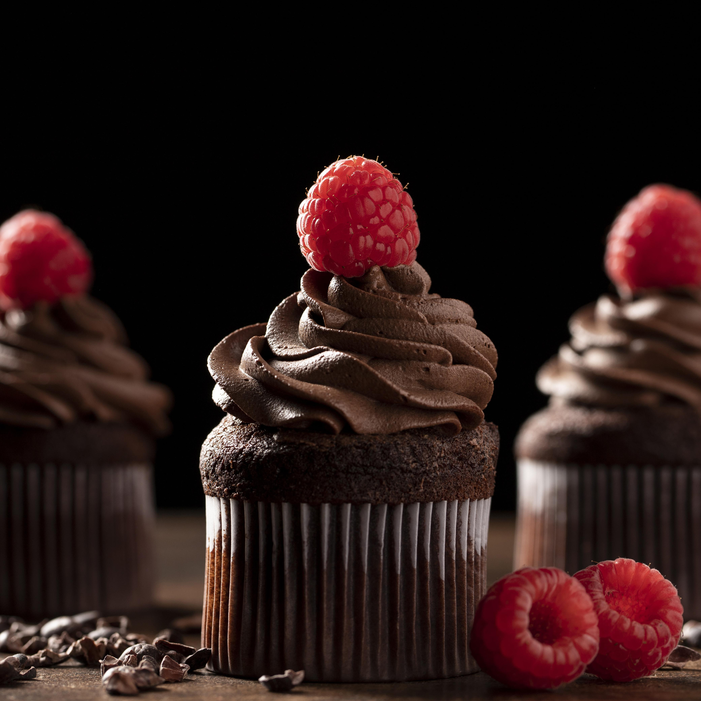

Acceuil
Nos recettes
Contactez-nous
Connexion
Vos recettes
Recette de Cupcakes Forêt Noire

Ingredients
110g de griottes
12g de cacao en poudre non sucré
120g de sucre
2 œufs
120g de beurre
120g de farine
Pour le glaçage
6 framboises fraiches
50g de chocolat
40g de sucre glace
10 cl de crème liquide
Méthode
1
Faites chauffer le four à 180°C.
2
Faites fondre le beurre au bain-marie.
3
Battre les oeufs avec le sucre.
4
Ajoutez le cacao et mélangez
5
Ajoutez le beurre, mélangez.
6
Ajoutez la farine en plusieurs fois.
7
Ajoutez les cerises égouttées.
8
Beurrez et farinez vos moules à muffins, versez la pâte au 2/3 et enfournez 15 minutes.
9
Battez la crème au fouet électrique.
10
Ajoutez le sucre glace.
11
Versez la préparation dans la poche à douille.
12
Décorez les cupcakes et ajoutez une framboise sur le dessus.